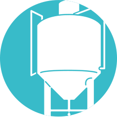

ABOUT US
WE ARE
왜 한국인들의 인생 맥주는 수입맥주일까?
왜 소맥 문화가 아닌 맥주만의 문화가 없을까?
왜 맥주가 탄생하는 과정을 보여주고 알려줄 수 없을까?
왜 우리나라에는 꼭 가보고 싶은 양조장이 없을까?
제주맥주가 태어난 이유인 이 질문들에 대한 답이 우리가 하는 모든 일입니다.
크래프트 맥주계의 리더로,
공장이 아닌 양조장을
제조 회사를 넘어 문화 기업을 만들며
한국 맥주 시장을 새롭게 선도합니다.

ACCOMPLISHMENTS
국내 최초 글로벌 크래프트 맥주사
미국 뉴욕 판매 1위 크래프트맥주사 브루클린 브루어리와의 아시아 첫 파트너십
맥주업계 최초 중소벤처기업부 '예비 유니콘 선정'
누적 투자액 600억 돌파 (2020년 기준)
런칭 후 매년 200% 이상 매출 성장 (2020년 기준)
제주 양조장 방문객 누적 약 10만 명 (2020년 기준)
제주도의 새로운 관광 명소로 자리매김
현대카드, 배틀그라운드, 이니스프리, 하이랜드파크
등과의 콜라보레이션

JEJU WIT ALE
세계 3대 맥주 품평회 2018 AIBA
국내 최초 '벨기에식 밀맥주' 부분
은상 수상
JEJU WIT ALE
2019 대한민국 주류대상
크래프트 맥주 에일 부분은상 수상

MISSON
한국 크래프트 맥주의 선구자로 좋은 맥주를 통해
맥주 미식문화를 창조합니다.
SPECIALTY
레시피

맥주 업계 최초 전 세계 셰프들의
오스카상인 제임스비어드상 수상자
브루마스터 개릿 올리버의 제주 위트 에일 레시피
뉴욕 NO.1브루클린 브루어리 30년 양조 노하우
15년 이상의 양조 경력을 보유한
세계 반열의 브루어 다수 참여
원료

독일,미국 등 현지 청정지역에서 재배한 홉
프리미엄 유럽산 맥아
제주도에서 직접 배양 및 관리하는 효모
기술과 과학
브루클린 브루어리의 축적된 기술과
과학의 노하우 전수
유럽 최고의 양조설비로 고품질 맥주 생산
세계 각지에서 공수한 맥주
연구 측정 장비로 엄격한 품질 관리
BRNAD SYMBOL
제주맥주가 탄생한 제주도의 지형적 특성을 아이콘화했습니다.
제주지역, 제주맥주, 더 나아가 크래프트 맥주 시장의 번영을
폭발이라는 메타포를 사용하여 표현했습니다.